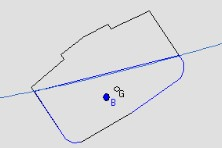
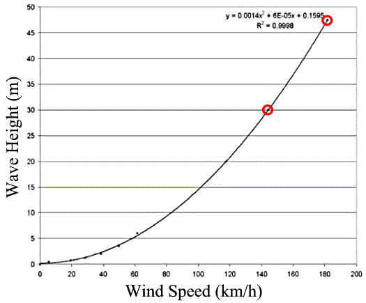
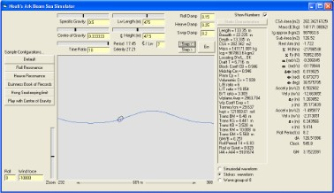
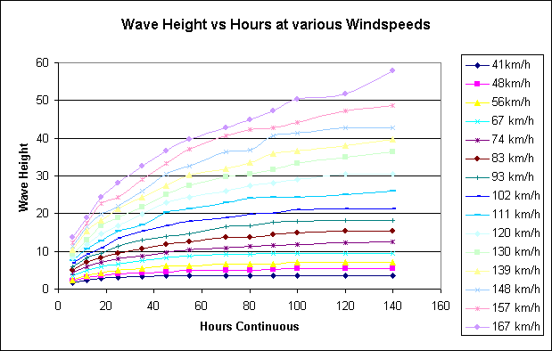
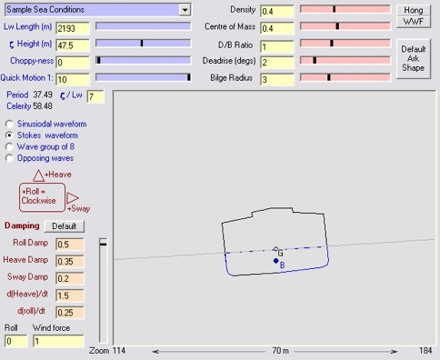

Copyright Tim Lovett © April, Oct, Dec 04, Apr 05
.
.
.
|
Sunk by waves the same length as the ship... More than 40 people died when the MV Derbyshire was lost in a typhoon in the South China Sea in 1980. The 294m Derbyshire had been at sea for only 2 years. An inquiry ruled that a hatch cover had failed as huge waves buffeted the 160,000 tonne bulk carrier. Further research indicated the ship failed because the waves were exactly the same length as the vessel. Dr Janet Heffernan who analyzed the wave patterns explained; "If the wave is smaller than the ship, then the vessel can cope with it. If the wave is much bigger, then the ship bobs on top of the wave, but if the wave is the same length then the ship picks up the frequency of the sea..." BBC article. Technical Report |
CONTENTS
The size and nature of the waves during the deluge dictates the strength of the ark. The Korean safety study concluded that the ark was capable of riding out 30m waves if the structure had 30 cm walls and 50cm framing timbers. With stronger construction, the ark could survive 47.5 m waves before water reaches the corner of the roof (heeling angle 31o). Such waves have never been recorded in the ocean today, the highest has been measured at 26m in the notorious North Atlantic.
|
 |
The ark in a beam sea (sideways to the incoming waves). This is the most dangerous state for a ship in high seas and could lead to capsize. |
Generation of wind waves of such magnitude would require a constant gale over a considerable distance (fetch). This is why waves are limited in a small lake. If the wind changes direction, the wave pattern can be reduced by interference with a new wave system. Generally speaking, strong winds are of relatively short duration, making very large waves a rare event.
Thirty meters is a big wave, a significant wave height H 1/3 of 15m approaching the upper limit in samples of tabulated data of North Atlantic waves. (Principles of Naval Architecture CH8 (Vol III), Section 2). At such a height, weatherships in the North Atlantic (PNA VIII, Section 2, Fig 20 Roll) recorded wavelengths of around 300m. (A height/length ratio of 1:20). These observations were from regions experiencing very severe weather compared to even the North Atlantic. In a more generalized study, Hogben and Lumb compiled over 1 million observations spanning 10 years, where wave heights in the highest range (11 to 12m) accounted for only 0.0013% of world-wide observations (or 0.007% of observations in the Northern North Atlantic).
For a wave with H 1/3 of 14m to develop in the open sea, a sustained wind speed of 63 knots (117 km/h) is required. (PNA VII, S2, Tables 6 & 7). (Measured at 19.5m above water surface). It was also found that observed recordings slightly overestimated the actual measured wave heights in the upper ranges by around 13%. According to Guinness Book of Records, the highest wave ever officially recorded was observed at 34m during a hurricane, but the record for an instrumentally measured wave is 'only' 26m.
Woodmorappe mentions the damping effect of flood debris as a factor in limiting wave development. Floating in the middle of a large mat of vegetation, the ark would be effectively shielded from wind generated waves. Of course, one could always assume such a floating island of organic material would become waterlogged and sink to the bottom prior to burial by sediment from continental runoff in the late flood stages. Not a bad explanation for the formation of oil reserves in the middle east.
Data
for waves up to 12m are listed with their most probable modal wave period
in Principles of Naval Architecture V3 Ch8 S2.10 Fig 26. Curve fitting to this
data appears to be a 2nd order polynomial (parabolic) function as follows;
Wave Height = 0.0663*period^2 - 0.5168*period + 2.5765
Assuming a sinusoidal waveform, equation 16 Section 2.2 gives; Lw = g * Tw^2 / (2 * P), which yields wavelengths of 944m for the 30m and 1424m for the 47m high wave. (Length to height ratios of approx 30:1). Such long wavelengths were probably not employed in the Hong study since the ark would ride comfortably over a 50m swell with a 1.5km wavelength.
| Sea State | Beaufort Scale | Wind (m/s, knots) | Sea | Height (m) | Length (m) | |
| 0 |
0 No wind |
< 0.2 | < 0.4 |
Smooth sea |
0 | - |
| 0 |
1 Gentle air |
1.5 | 3 |
Calm sea |
0.5 | 10 |
| 1 |
2 Light breeze |
3.3 | 6.5 |
Rippling sea |
||
| 1 |
3 Gentle breeze |
5.4 | 10.5 |
Gentle sea |
0.75 | 12 |
| 2/3 |
4 Moderate breeze |
7.9 | 15 |
Light Sea |
1.25 | 22 |
| 4 |
5 Fresh breeze |
10.7 | 21 |
Moderate Sea |
2.0 | 37 |
| 5/6 |
6 Strong breeze |
13.8 | 27 |
Rough sea |
3.5 | 60 |
| 6/7 |
7 Moderate Gale |
17.1 | 33 |
Very rough sea |
6.0 | 105 |
| 7 |
8 Fresh Gale |
20.7 | 40 |
High sea |
> 6.0 | >105 |
| 8 |
9 Strong Gale |
24.4 | 47 |
High sea |
||
| 9 |
10 Whole Gale |
28.3 | 55 |
Very high sea |
||
| 9 |
11 Storm |
32.7 | 64 |
Extremely heavy sea |
20 | 600 |
|
12 Hurricane |
>32.7 | >64 |
Extremely heavy sea |
|||
Compiled from Ref 1: Table 6.17a and 6.17b after Henschke. A photo of each sea state can be seen at http://www.crh.noaa.gov/lot/webpage/beaufort/#
Developed Sea data compiled from Ref 7
|
Hong paper 1994 |
40.1 | 78 |
Structural limit |
30 | 1160 |
|
Hong paper 1994 |
50.5 | 98 |
Stability limit |
47.5 | 2560 |
Extrapolated data for the 30 and 47.5m waves as described in the Hong study. Wave height is related to 2nd power of wind speed, the Henschke data yielding longer wavelengths than the PNA data extrapolation - obviously influenced by the 20m x 600 hurricane .

There is plenty of wave data based on averages, but values such as significant wave height do not indicate the highest wave likely to be encountered. The fact that different sets of waves can be superimposed gives rise to the possibility of a freak wave appearing. These rogue waves are unusually high and unusually steep, often breaking on top of a vessel. Images: http://www.tv-antenna.com/heavy-seas/
"There is really no available measurement of freak waves per se. Academic interests may be satisfied by the theoretical simulation of an event of rogue wave occurrence ... but the present (lack) of actual field measurements of rogue waves (means) even the best formulated theories remain unverified." Paul C. Liu, Research Physical Oceanographer, NOAA/Great Lakes Environmental Research Laboratory, http://www.glerl.noaa.gov/res/Task_rpts/ppliu02-3.html
Dr Frank Gonzalez describes the current theories for rogue wave generation in the quote below. "Rogue Wave vs Tsunami?". They are principally wind generated, possibly a statistical freak between multiple wave sets or a perfect shape to catch the wind. There is also a theory of interplay between wind and currents, which obviously doesn't explain how rogue waves can form in the absence of significant water current. There is considerable research underway on rogue waves, and some argue for a tightening of shipping rules (esp. increase of wave bending moment, wave slamming loads). Very large ships normally ride several waves at once, but freak conditions such as the Derbyshire incident attest to the danger of the wavelengths equal to the length of the hull.
"A tsunami is a series of ocean waves generated by any rapid large-scale disturbance of the sea water. Most tsunamis are generated by earthquakes, but they may also be caused by volcanic eruptions, landslides, undersea slumps or meteor impacts." NOAA
|
The 2004 Indian Ocean Earthquake magnitude 9.0 struck in deep sea off the western coast of northern Sumatra, Indonesia at 8am on Dec 26, 2004. The quake triggered massive tsunamis up to 15m (50 ft) devastating coastlines as far as East Africa. |
No Warning Days after the tragedy the human toll continues to stagger, with infrastructure damage hampering aide efforts. Without tsunami warning systems the Indian Ocean fury took many by surprise. Some had even gone to the seaside to observe the initial lowering of the sea. (The leading trough of the tsunami wave set). |
How could a loving God allow this? See AiG article "Waves of Sadness" by Carl Wieland. Note: In reference to the 2004 Indian Ocean tsunami the article states "Korean naval architects showed that the Ark could have withstood waves 4–5 times taller than this tsunami (only about 20 feet or 6 metres high)". In deep water a tsunami has a gentle slope and is only a few feet high - passing under ships virtually undetected. In this case the wave was 50cm after several hours.[8] The more dangerous wave heights only apply as the wave approaches the shore. In some instances, ships are recommended to head out to deeper water if there is enough time before a tsunami arrives.
"If you are on a boat or ship and there is time, move your vessel to deeper water (at least 100 fathoms - 600ft or 182m, ). Tsunami Safety Rules http://wcatwc.gov/safety.htm
In deep water a tsunami develops such a long wavelength that it is very low and virtually harmless (even unnoticed) to shipping. Wavelength is related to apparent speed (celerity), so the wave formation can attain speeds of up to 500 miles an hour, crossing the Pacific in a day. It is only as it approaches the shoreline that the tsunami begins to compress and rise higher, its momentum known to send the water far inland. Since the height of tsunamis in deep water is not dramatic, the run-up data is often quoted. This can be very misleading since the tsunami height can be amplified 20 times as the shallow water slows it down. Cynical imagery of the ark tossed around in 500m tsunamis (in deep water) would imply there was the potential for 10km (6 miles) of vertical runup when it hit the shoreline - not likely. Such a wave would break in the comparatively 'shallow' 1000-4000m water, dissipating its energy and settling down to a more realistic size. In fact, the 520m tsunami height of the 1958 landslide quoted by ark skeptics took place within a narrow Alaskan bay where there was no time for the wave to develop a standard profile. This is not a deep sea tsunami wave height.
So a tsunami generated by earthquake, landslide or volcanic activity could only pose a threat to Noah's Ark in shallow water. With an average depth of nearly 3km (2 miles) which is well over the NOAA recommendation, the world wide flood would actually protect the ark from tsunami shoreline effects. In the middle of an ocean where geological activity is concentrated on the perimeter (e.g. such as in the modern Pacific Ocean) the ark would safely ride over tsunami waves.
More tsunami info: http://www.pmel.noaa.gov/tsunami/Faq/
| Rogue Wave vs Tsunami ?
A tsunami is caused by a sudden displacement of water. The most frequent cause is an underwater earthquake but, less frequently, tsunamis can be generated by volcanic eruptions, landslides, or even oceanic meteor impact. The length of these waves, from one crest to the next, can be up to 200 km long, and they travel in the deep ocean at speeds around 700 km/hr. Their height in the open ocean is very small, a couple of meters at most, so they pass under ships and boats undetected. So called "rogue waves" are a bit more mysterious, and not very well understood. They are very high waves, tens of meters, perhaps. They are very short compared to tsunamis, less than a 2000 m, perhaps. They arise unexpectedly in the open ocean, and the generating mechanism is a source of controversy and active research. Some theories: -- Strong currents interact with existing swell to make them much higher -- They are just a statistical aberration that occurs when a bunch of waves just happen to be in the right spot at the right time, so that they add together to make one big wave -- If a storm "prepares" the ocean, by making it very rough, and this is followed by a sudden intensification of the storm, then the wind can get a "better grip" on the ocean surface (i.e., wind energy is much more efficiently transferred to the water), and the monster waves can thus be created. Dr. Frank Gonzalez, gonzalez@pmel.noaa.gov: http://www.pmel.noaa.gov/tsunami/Faq/x012_rogue
|
Wind: After the rainfall had ceased and the fountains of the deep subsided, God sent a wind. Genesis 8:1. The ark was still afloat at this stage, so the intensity and geographical scale of these winds hold the key to wave sizes. Record breaking waves (such as the Hong roll limit of 47.5m) would be unacceptable at the time of the ark coming to rest of the mountains, in fact waves of more then a few meters could pose a threat to a beached ark.
In the open sea, a stability limit of 47.5m or a structural limit of 30m does not tell the full story, since the wavelength must also be specified.
The following screenshot shows the ark in a beam sea. The waves have the more realistic 2nd order Stokes profile, and a very steep ratio of 1:10. For smaller waves a limit of around 1:7 is generally as bad as it gets before the wave will break on itself. This software was begun by Tim Lovett in an effort to reproduce the roll stability calculations in the Hong paper.

In closer detail, the ark is rolling in a double period with the Stokes waveform - with the roof beginning to dip into the water. Note the centre of buoyancy (B) which has not yet corrected the heel angle due to the angular momentum of the vessel generated by the passing wave crest. The wave is 'traveling' from left to right in this simulation, the vessel still rolling as it descends. If waves happen to coincide with the natural roll period of the ship, then roll is amplified. Immediate action is required, such as turning the vessel to change the frequency at which the waves meet the ship.
A more probable ratio of wave-height to wave-length is around 1:30, which would looks more like this;
Tsunami: (Based on the catastrophic plate tectonics model). Once the ark had landed the receding water level would minimize the risk of tsunami damage, especially since that ark was in a mountain range (Mountains of Ararat with other peaks visible). Hence the latter stages of the flood which involve high current velocities during continental runoff are irrelevant.
During the voyage, a tsunami could only pose a threat if the source was nearby - such as a local exploding volcano. So the proximity to volcanic activity and its likely nature (explosive or continuous) hold the key to understanding the tsunami waves of Noah's flood. Essentially, the deeper the water and the more distant the tsunami source, the safer the wave would be when it reaches the ark.
WAVE HEIGHT vs WIND SPEED AND DURATION
It is common knowledge that wind generates waves. Stronger wind gives bigger waves. (Ref 4) Initially the waves are close together and unsorted but with a steady wind over a long distance (fetch) the waves become well formed and further apart. A fully developed sea is one that has reached the full height and wavelength corresponding to a particular wind speed.
The following table shows the relationship between wind speed and duration (fetch) and the effect on wave height and period. The blue figures indicate typical values in a modern sea - very high wind speeds have a fixed direction for only a relatively short time. This table is a metric conversion based on http://www.stormsurf.com/page2/papers/seatable.html. (Ref 2)
|
Wind km/h |
Wind Duration (Hours) |
Property |
||||||||||||
| 6 | 12 | 18 | 25 | 35 | 45 | 55 | 70 | 80 | 90 | 100 | 120 | 140 | ||
| 41 | 1.74 | 2.38 | 2.74 | 3.05 | 3.35 | 3.66 | 3.66 | 3.66 | 3.66 | 3.66 | 3.66 | 3.66 | 3.66 |
height (m) |
| 6 | 7 | 8 | 9 | 10 | 11 | 11.5 | 12 | 12.5 | 12.5 | 13 | 13 | 13 |
period (s) |
|
| 80 | 185 | 296 | 463 | 741 | 1019 | 1296 | 1852 | 2222 | 2593 | 2871 | 3611 | 4352 |
fetch (km) |
|
| 48 | 2.13 | 3.05 | 3.66 | 3.96 | 4.27 | 4.57 | 4.88 | 4.88 | 4.88 | 5.18 | 5.33 | 5.33 | 5.33 |
height (m) |
| 6.6 | 8 | 9 | 10 | 11 | 12 | 13 | 13.5 | 14 | 14.5 | 15 | 15 | 15.5 |
period (s) |
|
| 89 | 204 | 315 | 519 | 759 | 1111 | 1482 | 2037 | 2500 | 2871 | 3426 | 4167 | 4815 |
fetch (km) |
|
| 56 | 2.29 | 3.66 | 4.27 | 4.88 | 5.49 | 6.1 | 6.1 | 6.71 | 6.71 | 6.71 | 7.01 | 7.01 | 7.01 |
height (m) |
| 7.2 | 9 | 10 | 11 | 12 | 13 | 14 | 15 | 16 | 16 | 16.5 | 17 | 17.5 |
period (s) |
|
| 94 | 232 | 389 | 556 | 926 | 1296 | 1667 | 2222 | 2778 | 3241 | 3704 | 4630 | 5556 |
fetch (km) |
|
| 67 | 3.54 | 4.88 | 5.79 | 6.71 | 7.62 | 8.38 | 8.84 | 9.14 | 9.14 | 9.45 | 9.45 | 9.45 | 9.45 |
height (m) |
| 8 | 10 | 11.5 | 13 | 14 | 15 | 16 | 17.2 | 18 | 18.5 | 19 | 19.5 | 20 |
period (s) |
|
| 111 | 259 | 435 | 667 | 1000 | 1482 | 1852 | 2593 | 3148 | 3704 | 4260 | 5371 | 6297 |
fetch (km) |
|
| 74 | 4.27 | 5.79 | 7.01 | 7.92 | 8.84 | 9.75 | 10.36 | 10.97 | 11.28 | 11.58 | 11.89 | 12.19 | 12.5 |
height (m) |
| 8.8 | 11 | 12.5 | 14 | 15 | 16.2 | 17 | 19 | 19.5 | 20 | 21 | 21 | 22 |
period (s) |
|
| 119 | 278 | 482 | 741 | 1093 | 1630 | 2222 | 2778 | 3334 | 4074 | 4630 | 5741 | 7038 |
fetch (km) |
|
| 83 | 4.88 | 7.01 | 8.23 | 9.45 | 10.67 | 11.89 | 12.5 | 13.72 | 13.72 | 14.33 | 14.94 | 15.24 | 15.24 |
height (m) |
| 9.3 | 12 | 13.5 | 15 | 16 | 18 | 18.5 | 20 | 21 | 22 | 22.5 | 23 | 24 |
period (s) |
|
| 130 | 315 | 528 | 787 | 1167 | 1759 | 2315 | 2963 | 3704 | 4260 | 5000 | 6667 | 7593 |
fetch (km) |
|
| 93 | 5.79 | 8.23 | 9.45 | 11.3 | 13.11 | 14.02 | 14.63 | 16.46 | 16.76 | 17.68 | 17.98 | 18.29 | 18.29 |
height (m) |
| 10 | 12.5 | 14.5 | 16 | 17.5 | 19 | 21 | 22 | 23 | 23 | 24 | 25.5 | 26.5 |
period (s) |
|
| 139 | 333 | 556 | 833 | 1296 | 1945 | 2500 | 3241 | 3889 | 4630 | 5371 | 7038 | 7871 |
fetch (km) |
|
| 102 | 6.86 | 9.14 | 10.97 | 13.4 | 15.24 | 16.76 | 17.98 | 18.9 | 19.81 | 20.12 | 21.03 | 21.34 | 21.34 |
height (m) |
| 11 | 13 | 15 | 17 | 19 | 21 | 22 | 23 | 24 | 25 | 26 | 27 | 28 |
period (s) |
|
| 148 | 352 | 593 | 926 | 1408 | 2130 | 2685 | 3519 | 4260 | 4815 | 5741 | 7223 | 8519 |
fetch (km) |
|
| 111 | 7.62 | 10.67 | 12.8 | 15.2 | 17.07 | 20.42 | 21.34 | 22.86 | 24.08 | 24.38 | 24.38 | 24.99 | 25.91 |
height (m) |
| 11.5 | 14 | 16.5 | 18 | 20 | 22 | 23.5 | 25 | 26 | 28 | 28 | 30 | 30 |
period (s) |
|
| 154 | 370 | 648 | 945 | 1482 | 2222 | 2778 | 3704 | 4537 | 5186 | 6019 | 7408 | 9260 |
fetch (km) |
|
| 120 | 8.38 | 11.89 | 14.63 | 16.8 | 19.81 | 22.86 | 24.38 | 25.91 | 27.43 | 28.04 | 28.96 | 30.48 | 30.48 |
height (m) |
| 12 | 15 | 17 | 19 | 21 | 22 | 25 | 26.5 | 28 | 28.5 | 30 | 31 | 33 |
period (s) |
|
| 163 | 407 | 704 | 1037 | 1574 | 2315 | 2963 | 3889 | 4630 | 5463 | 6297 | 7778 | 9445 |
fetch (km) |
|
| 130 | 9.14 | 13.11 | 16.76 | 18.9 | 21.64 | 24.99 | 27.43 | 29.87 | 30.48 | 31.7 | 33.22 | 35.05 | 36.27 |
height (m) |
| 13 | 16 | 18 | 20 | 22 | 25 | 26 | 29 | 29.5 | 30.5 | 31 | 32.5 | 35 |
period (s) |
|
| 169 | 435 | 732 | 1111 | 1630 | 2454 | 2963 | 4167 | 4815 | 5649 | 6667 | 8334 | 10371 |
fetch (km) |
|
| 139 | 10.36 | 15.24 | 18.29 | 21.3 | 24.38 | 27.43 | 30.18 | 32 | 33.53 | 35.97 | 36.58 | 38.1 | 39.62 |
height (m) |
| 14 | 17 | 19 | 21 | 23 | 25.5 | 27 | 29 | 31 | 32 | 33 | 34 | 36 |
period (s) |
|
| 178 | 454 | 750 | 1148 | 1667 | 2593 | 3148 | 4260 | 5000 | 5834 | 7038 | 8890 | 11112 |
fetch (km) |
|
| 148 | 11.28 | 16.46 | 19.81 | 22 | 25.91 | 30.48 | 32.61 | 36.27 | 36.88 | 40.54 | 41.45 | 42.67 | 42.67 |
height (m) |
| 14.5 | 17.5 | 20 | 22 | 23.5 | 26.5 | 28 | 30 | 32 | 33 | 34 | 35 | 36.5 |
period (s) |
|
| 185 | 472 | 787 | 1185 | 1806 | 2685 | 3334 | 4445 | 5278 | 6112 | 7223 | 9167 | 11297 |
fetch (km) |
|
| 157 | 12.19 | 17.37 | 22.56 | 24.4 | 28.96 | 33.22 | 37.19 | 40.54 | 42.37 | 42.67 | 44.2 | 47.24 | 48.77 |
height (m) |
| 15 | 18 | 21 | 22 | 25 | 27.5 | 30 | 32 | 33.5 | 35 | 35.5 | 37.5 | 39.5 |
period (s) |
|
| 191 | 482 | 824 | 1259 | 1852 | 2778 | 3519 | 4630 | 5556 | 6482 | 7501 | 9353 | 12038 |
fetch (km) |
|
| 167 | 13.72 | 19 | 24.38 | 28 | 32.61 | 36.58 | 39.62 | 42.67 | 44.81 | 47.24 | 50.29 | 51.82 | 57.91 |
height (m) |
| 16 | 19 | 22 | 24 | 26.5 | 29 | 31.5 | 33 | 34.5 | 36.5 | 37 | 40 | 44 |
period (s) |
|
| 204 | 500 | 852 | 1296 | 2037 | 2871 | 3704 | 4815 | 5741 | 6945 | 7871 | 9630 | 12594 |
fetch (km) |
|

Converting to wavelength: For harmonic waves in deep water the wave period (Tw in seconds) is related to wavelength Lw.
Lw = g * Tw2
2 Pi
(Ref 3)
So after 120 hours, a steady 157 km/h wind generates waves approaching the 47.5m mark with a period of 37.5 seconds, giving a wavelength of;
Lw = 9.8 * 37.5^2/(2*pi) = 2193m (2.2 km). This requires a fetch of over 9000 km over which the wind has been blowing steadily.
If you run those numbers on the Roll Simulator you will get a rather tame motion - especially at x1 speed. Even in a beam sea the roll is only 6 degrees, so the main sensation would be a gentle vertical acceleration - something like being in a lift. (Stokes waveform gives max acceleration on wave crest of -0.7m/s2, or 0.07g). Compare this to the passenger ship acceleration limit of 0.34g (at forward perpendicular) which is nearly five times higher. Modern passenger ships are, of course, designed to be very comfortable (low accelerations), so this big (and very long) wave is not presenting a problem.
All this assumes an ideal well developed sea without interference from other waves. A more realistic situation would be a dominant well-developed waveform with smaller superimposed waves causing some randomness. In other words, somewhere between ideal wind driven waves and a totally random sea, but with the globality of the wind (Gen 8:1) causing a bias towards a regular and fully developed sea.

There is more to the story however. The vessel will experience wind loads which will cause the vessel to heel (roll). A lightly loaded ark will be worse here because of the larger area for the wind to push against. Collins calculated a wind of 210 knots (388 km/h) would be required to hypothetically capsize the ark in flat water, so the 157km/h wind (16% of the energy of 388km/h) looks feasible even when side-on (broaching).
Of course, the balance to all this is that Noah's Ark should not be side-on to the wind for very long anyway. The ship should align itself with the wind and experience a relatively consistent head sea.
Wind generated waves under global wind conditions could reach abnormal wave heights but are likely to be very regular and fully developed with long wavelengths. Noah's Ark (or any other decent ship) could comfortably ride huge waves in a fully developed sea because the waves are not steep. (Ref 5) If the global wind was not so uniform, interference of wavesets could produce a more random sea - increasing the likelihood of steep waves and rogue formation.
The biggest threat to the ark would be a localized storm, which is not likely to form when there is a global wind blowing. (Ref 6)
Significant wave height (H 1/3). The average wave height (from trough to crest) of the highest 1/3 (33%) of waves.
Observed vs measured wave heights. Observed wave heights Hv as recorded by trained weather ship observers were found to differ from measured data. Simultaneous data (where waves were both observed and measured) was analysed by Nordenstrom who developed the following correlation;
H 1/3 = 1.68 * Hv 0.75
Highest wave. Guinness Book of Records claims the highest officially recorded wave of 34m was measured by Frederic Margraff, USN from the USS Ramapo on its way from Manila (Philippines) to California (USA). The wave was observed on the night of 6-7 Feb 1933, during a 68 knot (126 km/h) hurricane. If the Nordenstrom correlation were applied to the world record observed wave (34m), then a more realistic 23m is obtained.
The highest instrumentally recorded wave was one of 26m, recorded by the British Ship Weather Reporter, in the North Altantic on Dec 1972 at Lat 59N, Long 19W. (Directly below Iceland, slightly further North than the top of Scotland).
Ark Analysis Code. Attempting to match the Hong numbers in Table 3, I chose to work through the roll buoyancy calculation from first principles. The physics are extremely simple - a direct force balance the downward weight force (acting through the centre of gravity G) and the upward buoyancy force (through the centroid of the submerged area B). These are calculated using a polyhedral hull cross-section and a linear waterline approximation, with the instantaneous centre of rotation at the centre of mass. The integral of moment arm is then easily calculated by summing incremental increases in roll angle from zero to critical angle. (See Hong et al Table 3)
To make it dynamic, the unrestrained vertical and angular accelerations were found using Newton's 2nd law F=ma & T=Ia. That's about it. No account has been made for wave reflection or other effects in the proximity of the hull, so the accuracy would be reduced with smaller wave sizes (not that we really care about small waves here).
The biggest problem with dynamic simulation is arriving at a figure for the damping factors, since a direct analytic function for something like roll damping is a bit hard to find . Numbers like these are usually arrived at by a combination of scale model testing and computer simulation.
1. Ship Design for efficiency and economy: 2nd Ed: H Schneekluth, Butterworth Heinemann Oxford 1998
2. http://www.stormsurf.com/page2/papers/seatable.html
3. Principles of Naval Architecture. Motion of Ships in Waves. p 611. Wave Properties. Comstock (Ed) SNAME 1983
4. The Genesis Flood John C Whitcomb, Henry M Morris P&R Publishing 1961: p267 footnote 3. "The height and spacing of wind generated waves increase with the wind speed and the "fetch length;" that is, the open, unrestricted distance along which the wind can blow across the water surface. With a boundless ocean and a sudden great air movement from the poles to the equator, unimpeded by frictional resistance afforded by land surfaces, the potential wave size during this period would seem to be enormous. (C.L.Brretschneider: "Hurricane Design Wave Practices," Journal of the Waterways ad Harbors Division of the American Society of Civil Engineers, Vol 83, Paper 1238, May 1957, p3)"
5. Noah's Ark: A Feasibility Study. John Woodmorappe. ICR 1996. p54. "When the fetch of the wind-driven waves is virtually unlimited (as occurs in the southern ocean: Cornish 1934, p. 30), the wind driven waves have great wave-length and great crest-length, but not excessive height." Ocean Waves. Cornish, V. Cambridge University Press, Cambridge. 1934
6. Noah's Ark: A Feasibility Study. John Woodmorappe. ICR 1996. p54. "...hurricanes require a calm atmosphere to form, and are inhibited or suppressed by wind shear. Hypercanes: A possible link in global extinction scenarios. Emanuel K. A., et al. Journal of Geophysical Research 100(D7): 13, 755-13, 765. 1995. p13 759.
7. Seaworthiness: The Forgotten Factor. C.A. Marchaj. Adlard Coles London 1986 ISBN 0-229-11673-6
8. The first ever direct measurement of deep sea tsunami waves by radar satellites. The devastating Indian Ocean earthquake produced one of the most destructive tsunamis ever seen, yet it was only 50cm deep in the open sea. http://www.newscientist.com/article.ns?id=dn6854. NOAA analysts estimated the tsunami wave to be 60cm after 2 hours, dropping to 40cm after nearly 9 hours. http://www.noaanews.noaa.gov/stories2005/s2365.htm Return to text
Big Seas
http://www.tv-antenna.com/heavy-seas/
http://dode777.jeeran.com/announcement_page1.html
http://www.sailingscuttlebutt.com/photos/04/bigwaves/
http://chamorrobible.org/gpw/gpw-20040616.htm
Sea states
http://www.crh.noaa.gov/lot/webpage/beaufort/#
The NOAA website has an image library that can be searched here http://www.photolib.noaa.gov/search.html.. For example; Searching for "heavy seas" yields images like; http://www.photolib.noaa.gov/historic/nws/wea00800.htm , http://www.photolib.noaa.gov/historic/nws/wea00808.htm